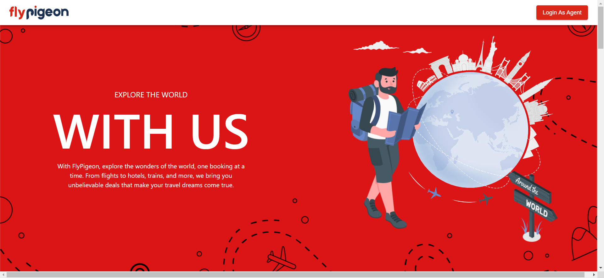
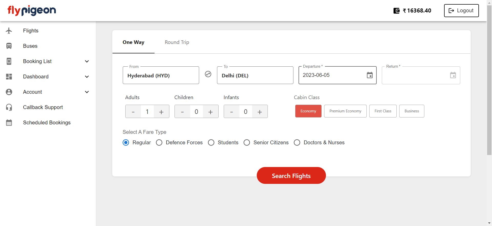

Report generated on 05-Jun-2023 at 17:23:55 by pytest-html v3.2.0
2 tests ran in 34.68 seconds.
(Un)check the boxes to filter the results.
0 passed, 0 skipped, 2 failed, 0 errors, 0 expected failures, 0 unexpected passes| Result | Test | Duration | Links |
|---|---|---|---|
| No results found. Try to check the filters | |||
| Failed | Test_Cases/Test_Flight_Booking.py::Test_FLight_Booking::test_demo | 15.71 | URL |
|
 self = <Test_Flight_Booking.Test_FLight_Booking testMethod=test_demo> def test_demo(self): self.driver.find_element(By.XPATH, "//div[@class='nav-logo']//div//img[@alt='flypigeon']") > self.one.search_field("hyde", "HYD", "Delhi", "DEL", "5") Test_Cases\Test_Flight_Booking.py:51: _ _ _ _ _ _ _ _ _ _ _ _ _ _ _ _ _ _ _ _ _ _ _ _ _ _ _ _ _ _ _ _ _ _ _ _ _ _ _ _ pages\flights\oneway.py:89: in search_field self.from_field(from_, from_data) pages\flights\oneway.py:48: in from_field self.oneway_from_locators().click() pages\flights\oneway.py:26: in oneway_from_locators return self.webelement_click(By.XPATH, self.oneway_from_locator) Base\base_class.py:21: in webelement_click elements = wait.until(ec.element_to_be_clickable((locator_type, locator))) _ _ _ _ _ _ _ _ _ _ _ _ _ _ _ _ _ _ _ _ _ _ _ _ _ _ _ _ _ _ _ _ _ _ _ _ _ _ _ _ self = <selenium.webdriver.support.wait.WebDriverWait (session="fa654b72cd93808df6643ec28b53be7c")> method = <function element_to_be_clickable.<locals>._predicate at 0x000001D3BB67AB60>, message = '' def until(self, method, message: str = ""): """Calls the method provided with the driver as an argument until the \ return value does not evaluate to ``False``. :param method: callable(WebDriver) :param message: optional message for :exc:`TimeoutException` :returns: the result of the last call to `method` :raises: :exc:`selenium.common.exceptions.TimeoutException` if timeout occurs """ screen = None stacktrace = None end_time = time.monotonic() + self._timeout while True: try: value = method(self._driver) if value: return value except self._ignored_exceptions as exc: screen = getattr(exc, "screen", None) stacktrace = getattr(exc, "stacktrace", None) time.sleep(self._poll) if time.monotonic() > end_time: break > raise TimeoutException(message, screen, stacktrace) E selenium.common.exceptions.TimeoutException: Message: E Stacktrace: E Backtrace: E GetHandleVerifier [0x00C7A813+48355] E (No symbol) [0x00C0C4B1] E (No symbol) [0x00B15358] E (No symbol) [0x00B409A5] E (No symbol) [0x00B40B3B] E (No symbol) [0x00B6E232] E (No symbol) [0x00B5A784] E (No symbol) [0x00B6C922] E (No symbol) [0x00B5A536] E (No symbol) [0x00B382DC] E (No symbol) [0x00B393DD] E GetHandleVerifier [0x00EDAABD+2539405] E GetHandleVerifier [0x00F1A78F+2800735] E GetHandleVerifier [0x00F1456C+2775612] E GetHandleVerifier [0x00D051E0+616112] E (No symbol) [0x00C15F8C] E (No symbol) [0x00C12328] E (No symbol) [0x00C1240B] E (No symbol) [0x00C04FF7] E BaseThreadInitThunk [0x765B00C9+25] E RtlGetAppContainerNamedObjectPath [0x77BC7B4E+286] E RtlGetAppContainerNamedObjectPath [0x77BC7B1E+238] C:\Users\sasik\AppData\Roaming\Python\Python311\site-packages\selenium\webdriver\support\wait.py:95: TimeoutException -------------------------------Captured log call-------------------------------- WARNING oneway:oneway.py:47 Enter From Location | |||
| Failed | Test_Cases/Test_Flight_Booking.py::Test_FLight_Booking::test_flight_ticket_book | 17.83 | URL |
|
 self = <Test_Flight_Booking.Test_FLight_Booking testMethod=test_flight_ticket_book> def test_flight_ticket_book(self): self.one.login() self.one.search_field("hyde", "HYD", "Delhi", "DEL", "5") > swf = self.one.search_button_click() Test_Cases\Test_Flight_Booking.py:27: _ _ _ _ _ _ _ _ _ _ _ _ _ _ _ _ _ _ _ _ _ _ _ _ _ _ _ _ _ _ _ _ _ _ _ _ _ _ _ _ pages\flights\oneway.py:83: in search_button_click self.search_button().click() pages\flights\oneway.py:44: in search_button return self.webelement_click(By.XPATH, self.search) Base\base_class.py:21: in webelement_click elements = wait.until(ec.element_to_be_clickable((locator_type, locator))) _ _ _ _ _ _ _ _ _ _ _ _ _ _ _ _ _ _ _ _ _ _ _ _ _ _ _ _ _ _ _ _ _ _ _ _ _ _ _ _ self = <selenium.webdriver.support.wait.WebDriverWait (session="fa654b72cd93808df6643ec28b53be7c")> method = <function element_to_be_clickable.<locals>._predicate at 0x000001D3BB768A40>, message = '' def until(self, method, message: str = ""): """Calls the method provided with the driver as an argument until the \ return value does not evaluate to ``False``. :param method: callable(WebDriver) :param message: optional message for :exc:`TimeoutException` :returns: the result of the last call to `method` :raises: :exc:`selenium.common.exceptions.TimeoutException` if timeout occurs """ screen = None stacktrace = None end_time = time.monotonic() + self._timeout while True: try: value = method(self._driver) if value: return value except self._ignored_exceptions as exc: screen = getattr(exc, "screen", None) stacktrace = getattr(exc, "stacktrace", None) time.sleep(self._poll) if time.monotonic() > end_time: break > raise TimeoutException(message, screen, stacktrace) E selenium.common.exceptions.TimeoutException: Message: E Stacktrace: E Backtrace: E GetHandleVerifier [0x00C7A813+48355] E (No symbol) [0x00C0C4B1] E (No symbol) [0x00B15358] E (No symbol) [0x00B409A5] E (No symbol) [0x00B40B3B] E (No symbol) [0x00B6E232] E (No symbol) [0x00B5A784] E (No symbol) [0x00B6C922] E (No symbol) [0x00B5A536] E (No symbol) [0x00B382DC] E (No symbol) [0x00B393DD] E GetHandleVerifier [0x00EDAABD+2539405] E GetHandleVerifier [0x00F1A78F+2800735] E GetHandleVerifier [0x00F1456C+2775612] E GetHandleVerifier [0x00D051E0+616112] E (No symbol) [0x00C15F8C] E (No symbol) [0x00C12328] E (No symbol) [0x00C1240B] E (No symbol) [0x00C04FF7] E BaseThreadInitThunk [0x765B00C9+25] E RtlGetAppContainerNamedObjectPath [0x77BC7B4E+286] E RtlGetAppContainerNamedObjectPath [0x77BC7B1E+238] C:\Users\sasik\AppData\Roaming\Python\Python311\site-packages\selenium\webdriver\support\wait.py:95: TimeoutException -------------------------------Captured log call-------------------------------- WARNING oneway:oneway.py:47 Enter From Location INFO oneway:oneway.py:57 From location is placed WARNING oneway:oneway.py:60 Enter To Location INFO oneway:oneway.py:69 To location is placed INFO oneway:oneway.py:80 Date is placed | |||